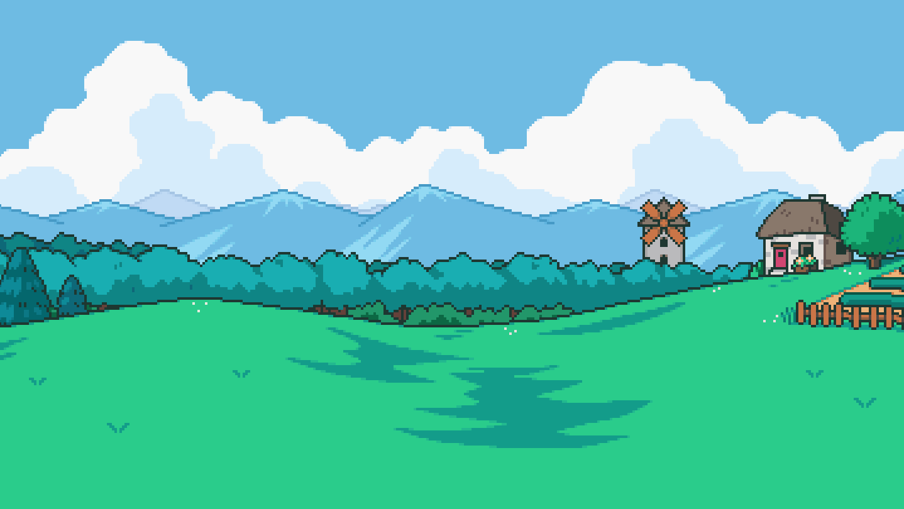
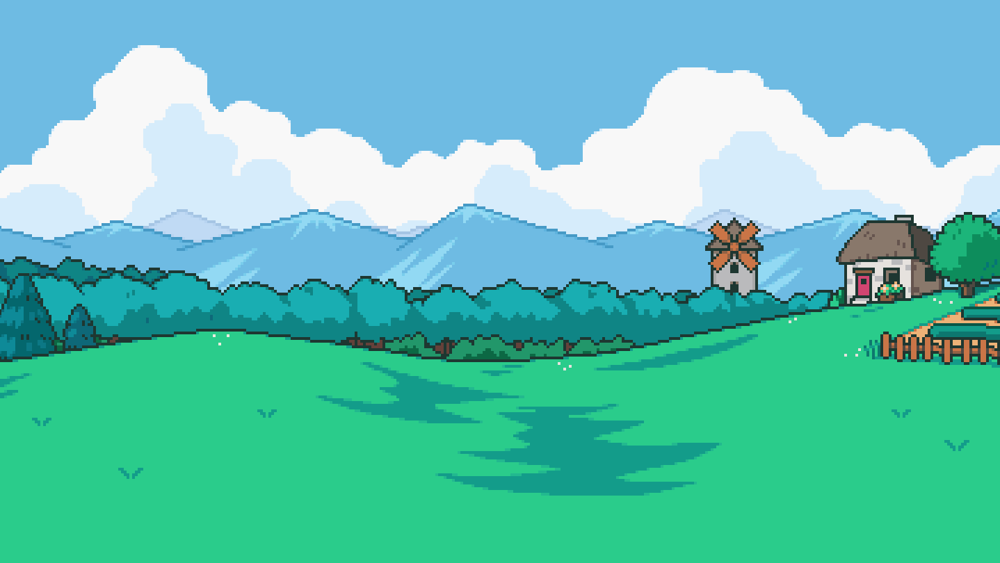
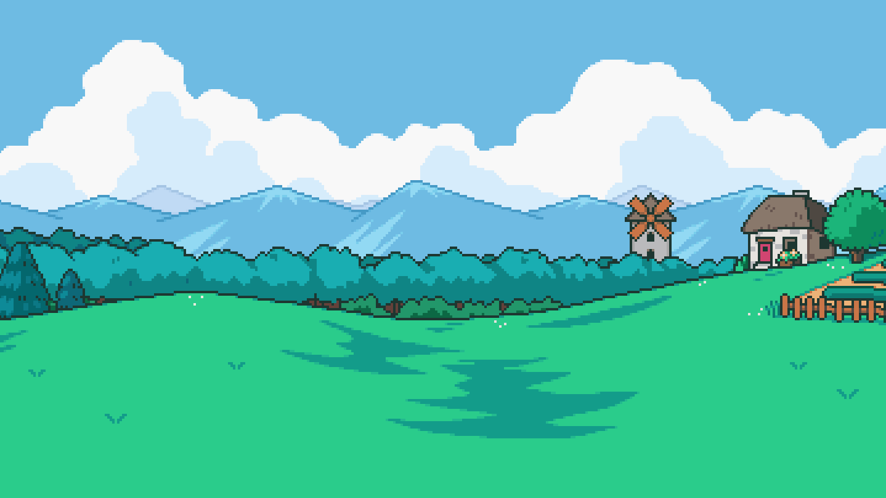

Le VS
Nous allons vous présenter sur notre site web deux jeux bien différents entre eux : Field of Mistria qui est un jeu de simulation d'agriculture et Clair Obscure qui est un jeu RPG aux combats tour par tour punitif.
 

Nous allons vous présenter sur notre site web deux jeux bien différents entre eux : Field of Mistria qui est un jeu de simulation d'agriculture et Clair Obscure qui est un jeu RPG aux combats tour par tour punitif.
